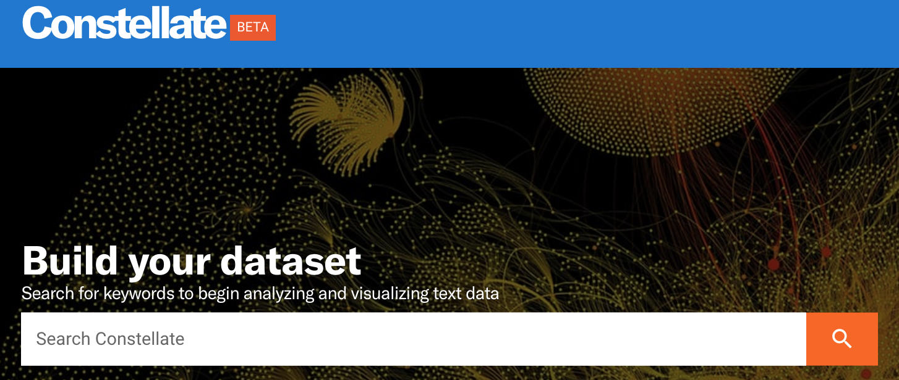
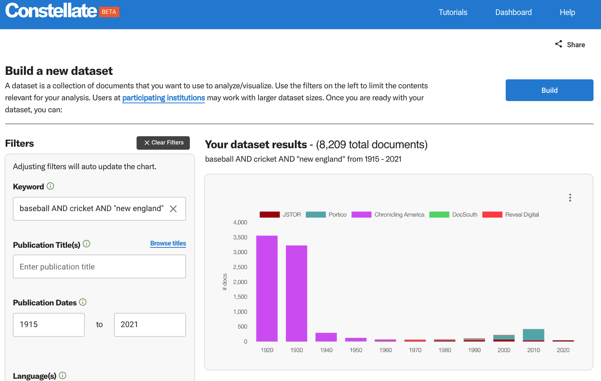
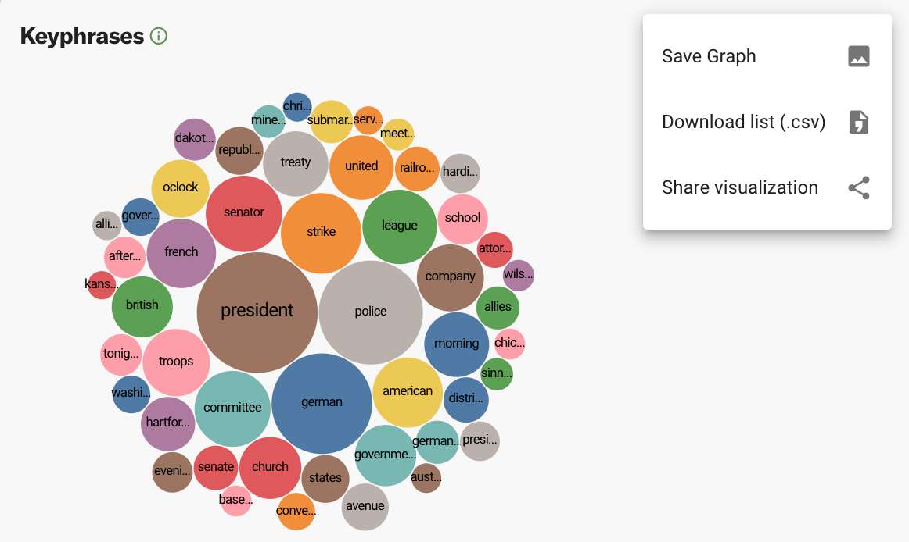
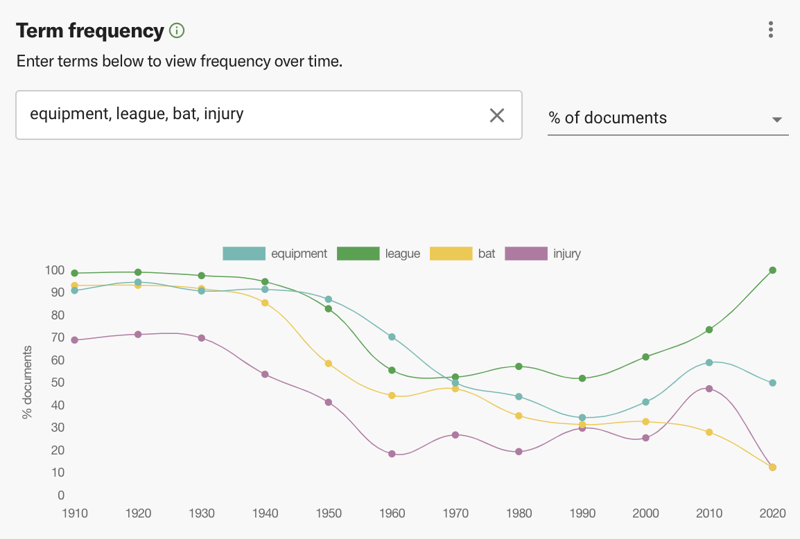
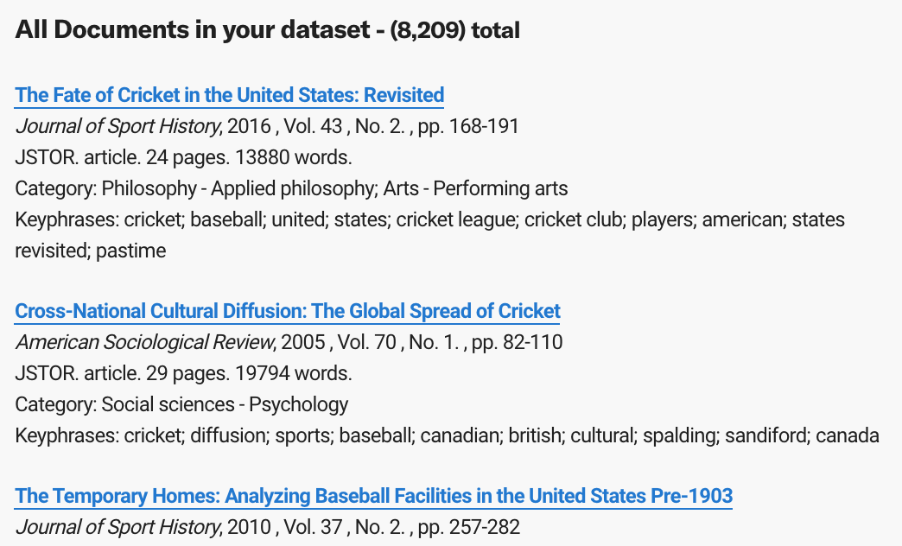
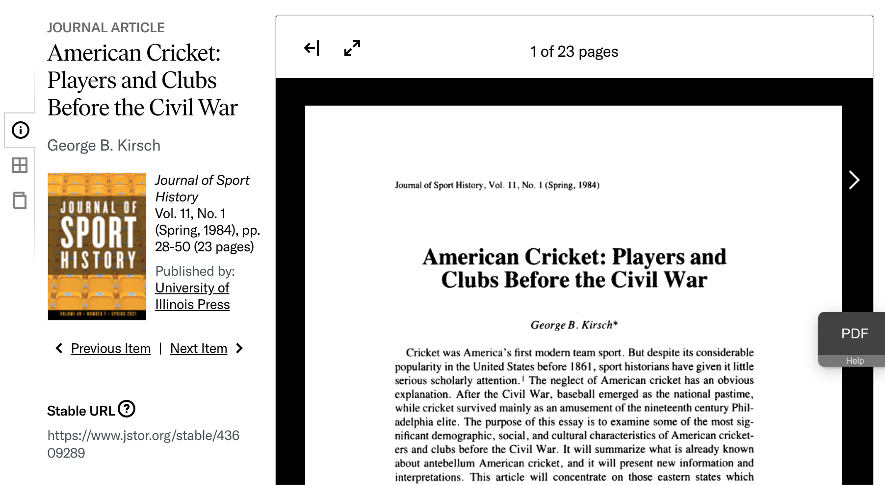
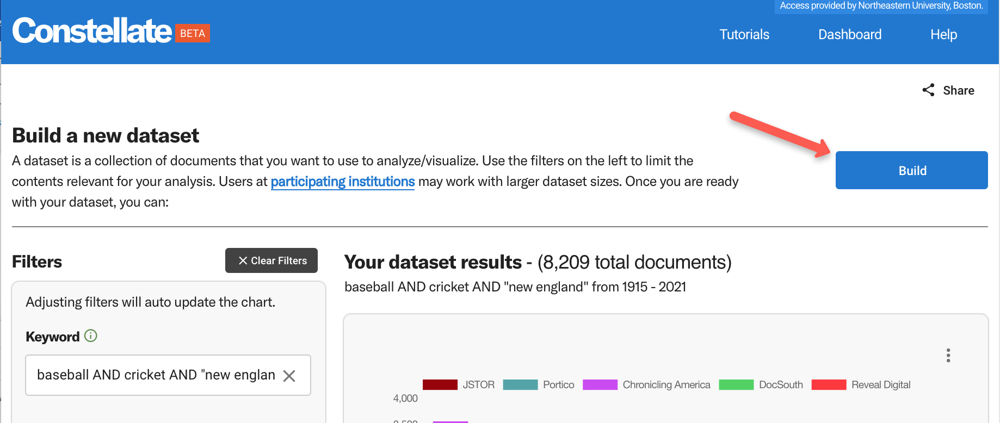
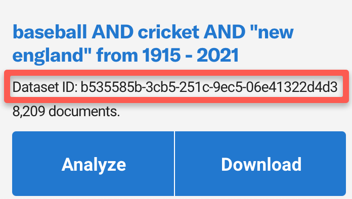

Created by Jen Ferguson, based on the Constellate QuickStart guide by Amy Kirchhoff of ITHAKA.
Building a dataset in Constellate for text analysis¶
Point your browser to https://constellate.org/. You’ll see a large search box that says ‘build your dataset’.
{kind=link}
Drop a term in there on a topic that interests you and start exploring!
When you click search, you’ll go into Constellate’s dataset builder with your initial term in the ‘keyword’ search box.
{kind=link}
You’ll see filters on the left, and some preliminary visualizations on the right.
Experiment with the various filters on the left to narrow the documents on your topic of interest. As you change them, the visualizations on the right will change. See here for a detailed description of these filters.
(Placeholder: WFI from ITHAKA on ballpark dataset size for exploration to insert here)
Hint: Building a coherent dataset is key to any text analysis. If you’re just exploring, ITHAKA recommends building a very tight, subject specific dataset. You can do this with some robust keyword filtering, but you might also want to focus on one or two titles. The publications in Reveal Digital are often very narrow and using one of those publications as a source can provide interesting and informative results.
The intent behind the visualizations is to give you a peek into your dataset as you’re building it so that you can adjust the parameters of your search as you go. But these visualizations can stand alone too! You can download any of the visualizations as images, or download the data behind the visualizations, by selecting the three vertical dots on the top right of each one. You can also create a shareable URL directly to the visualization from that menu.
{kind=link}
Try adding some words into the term frequency visualization to see how prevalent they are in your dataset, and how the usage of those words might change over time.
{kind=link}
At the bottom of the page, you may see some hyperlinked documents from your dataset. 
{kind=link}
Feel free to click through a URL or two and take a look at the documents.
{kind=link}
When you’re happy with your configurations and want to save your dataset, go up to the top and select “Build”, then “Confirm”.
{kind=link}
Once you build the dataset, you’ll notice the page change. You’re now looking at your Dataset Dashboard. This is where all the datasets you have created will live. This is going to save your search and give it a unique identifier called a dataset ID so you can easily get back to it again and share it with others.
{kind=link}
Note: your dataset may take some time to build, especially if it’s large.
Important: If you want to use your dataset for the text analysis lesson, you’ll want to keep track of your dataset ID. It’s a good idea to copy/paste that dataset ID somewhere to ensure that you can return to it later.
A note about logging in. You have a couple of options under that login button at the top right. Why might you want to log in?
Logging in can allow you to work with bigger datasets: If you look at the very top right of your webpage, does it say “Log in through your institution”? If so, click the Log in button and choose “Find your Institution to increase access”. You can then use the JSTOR institution finder to connect to your institution’s network. If your institution participates in Constellate (as Northeastern does currently), you’ll now be able to work with datasets of up to 50,000 items.
Logging in lets you save your dashboard across devices: By default, information about your datasets is being stored in a cookie in your browser. If you create a user account and log in, your dashboard and dataset information will be saved to the Constellate database and you’ll have access to the same dashboard from any device. As a bonus, you can use that same account to do some extra stuff over on JSTOR as well.
Lesson Complete!¶
For more detailed work, we’re going to pull that dataset you generated into a Jupyter Notebook. Next, we’ll look at Getting started with Jupyter Notebooks.
More resources
Constellate QuickStart Guide: https://constellate.org/docs/user-quick-start
More about Constellate’s visualizations: https://constellate.org/docs/all-about-visualizations